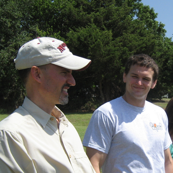
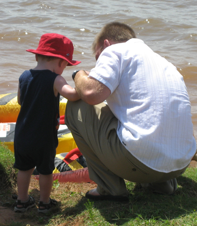
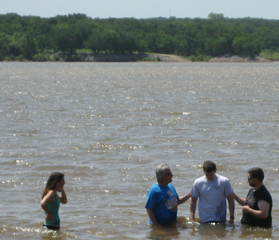
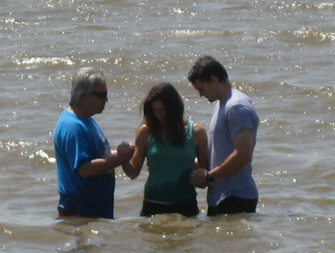
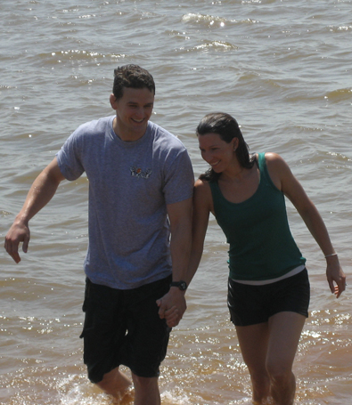

Saturday, June 18, 2011
| It was another great year for baptisms at
Calvary Chapel of OKC. Each summer we have a cookout and baptism at
Lake Arcadia. Yes, it's my favorite church at my favorite lake
celebrating my favorite thing - Jesus! Does it get any better than
this? Well, if you could have knocked about 15 degrees off of the
stifling heat that would have been nice, but hey, I was just glad it
wasn't storming or something. |
|
 |
 |
| Eric, telling Rusty another amusing anecdote. | This baby came up out of nowhere, grabbed his hand, and took him to check out the water. |
|
|
|
 Rusty with Pastor Ken & Dan while Cody looks on. |
|
|
 |
 |
| I thought this was just beautiful. Rusty assists Pastor Ken to
baptize Cody.
|
Happiness is a marriage devoted to the Lord.
These two are going to do amazing things for the Lord - praise God!! |